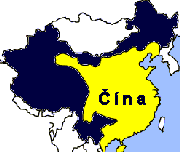
Èína za vlády dynastie Tchang
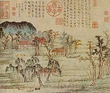
Chao Meng-fu
|
ÈÍNA
Jako ka�dá velmoc má i Èína ve své historii š�astné a smutné stránky. K tìm lepším patøí duchovní tradice, ze které èerpal taoismus i konfucianismus. V Èínì vznikla nádherná umìlecká díla (stavby, sochy, kresby, literatura). Èína dala svìtu mnoho vynálezù – kompas, papír, hedvábí atd. Je pravlastí bojovıch umìní. Její obyvatelé vybudovali nejvìtší stavbu svìta, která je dokonce vidìt z obì�né dráhy Zemì – Velkou èínskou zeï. Na druhé stranì obrovské území i poèet obyvatel vy�adoval pøísnou organizaci, která z Èíny utvoøila úøednickı stát. Obyvatelé tak byli èastokrát vydáni na milost a nemilost státnímu aparátu.
Nejtì�ší období potkalo Èíòany po vítìzství komunistické ideologie. Za vlády Mao Ce-tunga a jeho nástupcù pøišlo o �ivot 80 milionù obyvatel a øada kulturních památek byla nenávratnì znièena.
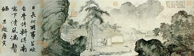
Tang Jin: Pití èaje
|
Historie
Dìjiny Èíny tvoøí období pojmenovaná podle vládnoucích dynastií. Legendy umís�ují jejich poèátky a� do 3. tis. pø.n.l. Nejvıznamnìjšími dynastiemi byly Šang (16. stol. a� 1027 pø.n.l.), Èou (1027-256 pø.n.l.), Chan (206 pø.nl. – 220 n.l.), Tchang (618-907 n.l.) a Sung (960-1279 n.l.), kterou vystøídala mongolská dynastie Jüan (1279-1368 n.l.), dále Ming (1368-1644 n.l.) a Èching (1644-1911) nazıvaná té� Mand�uská dynastie. V letech 1271-95 podnikl svou cestu do Èíny Marco Polo a od 16. stol. sem pronikají první evropští kolonisté (portugalské Macao, opiové války s Anglií…). V roce 1912 byla vyhlášena Èínská republika, ve které vládnou od roku 1949 komunisté.
|
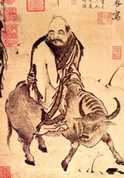
Základním textem taoismu je Lao-c’ neboli Tao-te-�ing. Pøelo�it tento název není jednoduché, v�dy� u� její první verše znìjí následovnì: „Tao, které lze postihnout slovy, /
není vìèné a nemìnné tao; / jméno, které lze pojmenovat, / není vìèné a nemìnné jméno“. Vıznamnı èeskı sinolog Oldøich Král titul pøekládá O Cestì Tao a její Síle, jiné pøeklady znìjí Kniha o cestì a její síle nebo Kniha o tao a ctnosti. Podle tradice je jejím autorem Lao Tan, hlavní archiváø císaøského dvora. Ten se po mnoha letech slu�by rozhodl odjet na vodním buvolu do hor. Pøi jednom zastavení napsal 81 kapitol svého díla, díky nìmu� se stal nesmrtelnım. Lao-c’ bıvá nazıván Starım Mistrem, proto�e byl starším souèasníkem Konfucia.
|
Taoismus
Podstatou taoistického náhledu na svìt je pøesvìdèení, �e by èlovìk nemìl zasahovat do vìcí, které samy fungují pøirozenou cestou. Taoisté hlásají návrat k pøírodì a k prostému �ivotu. Neuznávají svìtské pocty a cti�ádostivost. Nevìøí na posmrtnı �ivot, a proto je jejich hlavním cílem dosa�ení dlouhovìkosti. Pro tento úèel vypracovali taoisté systém meditací, cvièení (tchaj-�i) a zdravého stravování.
Ve 2. stol. pø.n.l. se z taoistické filozofie stává nábo�enství. Pùvodní uèení o tao jako o základním neposti�itelném principu všech vìcí je doplnìno pøíbìhy o bozích a démonech. Na nebesích vládne Nefritovı císaø, jeho� dvùr je velmi podobnı dvoru skuteèného èínského císaøe. V taoismu mají svého boha nejen pøírodní úkazy nebo mìsta, ale také kvìtiny, svìtové strany, a dokonce i pøíkopy nebo zdi. Rodinnı �ivot chrání Pán domácího krbu.
Taoistickı kánon (Tao-cang) zahrnuje 5318 svitkù, nejdùle�itìjším z nich ale zùstává Tao-te-�ing. Údaje o stáøí tohoto spisu se rùzní (6. a� 3. stol. pø.n.l.)
K taoismu se hlásil také Mistr Èuang Èou (369–286 pø.n.l.), autor tohoto podobenství:
|
Zdálo se Èuangovi, �e je motıl, jen� poletuje kolem, motıl se cítil motılem, nic mu nechybìlo, nevìdìl, �e je Èuang. Náhle se probudil a ustrnul, je Èuang! A teï neví, zdálo se Èuangovi, �e je motıl, nebo se zdá nyní motılu, �e je Èuang? Èuang nebo motıl, pøece tu musí bıt nìjakı rozdíl! A tomu se øíká promìnlivost vìcí!
|
|
Jin a jang
Taoismus pøevzal starší uèení o jednotì protikladnıch sil jin a jang. Jeliko� je tao základem všech vìcí, jsou jin (�enskı princip) i jang (mu�skı princip) pouze jeho projevy. Èíòané vypracovali podrobnou klasifikaci všech jevù, podle které jang (sluneèní strana hory) symbolizuje pohyb, svìtlo, teplo, �ivot, nebesa atd. Jin (zastínìná strana hory) zase vìci i jevy opaèné. Oba principy od sebe nelze oddìlit, tak jako neexistuje stín bez slunce. Jedno je obsa�eno v druhém. Pokud je nìco pøíliš jang, mìní se v jin a naopak. Tato jednota je symbolicky vyjádøena ve známém kruhovém obrazci.
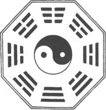
Symbol jednoty jin a jang obklopenı trigramy z Knihy promìn (I-�ing)
Zdál se ti v poslední dobì nìjakı zajímavı sen? Zkus ho pøevyprávìt a vylo�it.
Nakresli ilustraci k Èuangovu snu.
|
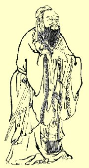
Konfucius (552-479 pø.n.l.) vidìl ideál ve spoleènosti zalo�ené na dodr�ování spoleèenskıch norem, zákonù a úctì k tradicím. Cílem konfucianismu bylo sladìní potøeb individua a státu. Vıznamnım po�adavkem byla poslušnost vùèi starším a nadøízenım.
Šíøení konfucianismu
Z Èíny se konfucianismus rozšíøil do Vietnamu, Korey a Japonska.
Které uèení je ti bli�ší? Taoismus nebo konfucianismus? Proè?
|
Konfucius: Hovory
Kdy� se Jen Chuej zeptal na definici Dokonalého Lidství, Mistr odpovìdìl:
„Podmanìní sebe sama a návrat k dodr�ování pøedpisù vytváøí Dokonalé Lidství. Jestli�e bìhem jednoho dne dosáhnete sebekontroly, okolí vás uzná jako Dokonalého Èlovìka. Dosa�ení Dokonalého Lidství musí pøijít z vás samıch, èlovìk ho nemù�e získat od jinıch."
„Jaké jsou slo�ky sebeovládání a co pøedstavuje návrat k pøedpisùm?"
„Nehledejte a nekonejte nic, co není v souladu s pøedpisy; nedívejte se na nic takového, ani tomu nenaslouchejte."
„Nejsem pøíliš pilnı, ale to, co jste øekl, je pøesnì to, co hodlám udìlat."
|
Konfucius (latinská podoba jména Kchung fu-c´ – Mistr z rodu Kchung) byl velmi vzdìlanı mu� a pùsobil jako uèitel. Shromá�dil kolem sebe �áky, aby z nich vychoval Dokonalé Mu�e, kteøí by svım pøíkladnım jednáním postupnì zmìnili celou spoleènost. Konfucius (552-479 pø.n.l.) toti� �il v tì�ké dobì zmítané válkami. Za vlády dynastie Èou byla Èína rozdrobena mezi øadu kní�ectví a moc císaøe byla velmi slabá. Konfucius se chtìl stát vıznamnım úøedníkem a vše napravit, ale císaø mu to neumo�nil. Slavnı uèenec byl pova�ován spíše za ozdobu dvora a za svého �ivota oficiálního uznání nedosáhl. Jeho �áci sepsali Konfuciovo uèení do knihy Hovory (Lun-jü neboli Vybraná ètení).
Konfucianismus
Konfuciovi �áci nemìli snadnı �ivot, proto�e stejnì jako jejich uèitel po�adovali po císaøi, aby byl Dokonalım Èlovìkem, kterı peèuje o blaho svıch poddanıch. Dokonce se objevily i názory, �e špatnı vládce mù�e bıt svr�en! Tak se stalo, �e tzv. První císaø nechal v roce 213 pø.n.l. nìkolik set konfuciáncù za�iva pohøbít a spálil všechny jejich knihy. A� s nástupem nové dynastie Chan dosáhli Konfuciovi pokraèovatelé toho, oè usiloval jejich Mistr. Roku 136 pø.n.l. se stal konfucianismus státním nábo�enstvím. V hlavním mìstì Èíny vznikla univerzita, kde budoucí úøedníci studovali Klasické knihy a Konfuciovy spisy. Postupnì se ujal systém státních zkoušek, kterı umo�òoval úøedníkùm slu�ební postup.
|
Klasické knihy
Legendy pøipisují Konfuciovi autorství tzv. Klasickıch knih, pravdou ale bude pouze to, �e tyto knihy peèlivì studoval a vedl k tomu i své �áky. Jde o 5 textù – Kniha písní, Kniha promìn, Kniha obøadù, Kniha dokumentù a Letopisy jara a podzimu. Kniha písní (Š'-�ing) je sbírkou poezie. Kniha promìn (I-�ing) je vìšteckı text, kterı nabízí postup, jak pøedpovídat rùzné události rozhozením tøí mincí. Ka�dému hodu odpovídá jeden trigram (tøi pøerušované nebo plné èáry). Takovıch trigramù je celkem 8 a reprezentují rùzné �ivly (zemì, nebe, oheò, vítr atd.). Jejich spojením vznikne 64 hexagramù, jejich� vıznam je detailnì popsán v této knize. Kniha obøadù (Li-�ing) je velmi rùznorodá. Popisuje správní systém v Èínì a vedle vládních naøízení obsahuje i návody na vedení domácnosti (vèetnì kuchaøskıch receptù), vıbìr vhodného jména pro novorozence, pravidla spoleèenského chování atd. Kniha dokumentù (Šu-�ing) líèí èínské dìjiny. Zaèíná vypravováním o legendárních císaøích a prvních historickıch dynastiích a pokraèuje a� do doby Èou. Letopisy jara a podzimu jsou kronikou státu Lu (722-481 pø.n.l.), ve kterém se narodil i Konfucius.
|
Li Po (710-762 n.l.)
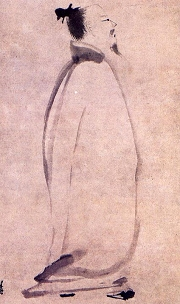
Tu Fu (712-770 n.l.)
Byl Li Po opilec? Proè o nìm Tu Fu napsal báseò?
|
Li Po
Básník Li Po (710-762 n.l.) proslul hlavnì svımi bezstarostnımi pijáckımi verši. Jeden èas se stal dokonce dvorním básníkem císaøe, ale kvùli intrikám musel z paláce odejít. Od té doby se potuloval krajinou od jedné krèmy ke druhé, kde mu díky císaøskému dekretu museli v�dy nalít zdarma...
Tu Fu: Ètyøverší na Li Po
U d�bánku vína Li sto básní napíše,
noc dospí v hospodì, kdy� mìsíc dozáøí.
Císaø pán pozve jej, Li s díky odmítá:
– Jsem pøece vína bùh, ó pane císaøi!
|
|
Kniha písní (Š’-�ing)
Kniha písní (11. a� 6. stol. pø.n.l.) neboli Š’-�ing je nejstarší sbírkou èínské poezie a obsahuje více ne� 300 básní. Pùvodnì šlo o hymny, ódy a dvorské i lidové písnì, ale jejich nápìvy se nedochovaly. Námìtem skladeb bıvá èínská mytologie a historie, cyklus zemìdìlskıch prací i obyèejnı �ivot (láska, svatba, vojna atd.).
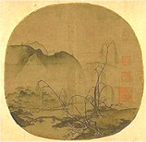
Ma Jüan: Mladá vrba a vzálené pohoøí
|
Opièí král a Tripitaka
Námìtem knihy Vyprávìní o putování na západ byla skuteèná cesta buddhistického mnicha Süan-canga (pøezdívaného Tripitaka podle stejnojmenného buddhistického kánonu) pro sútry do Indie. Podnikl ji v letech 629 a� 645 a peèlivì svou cestu popsal ve vlastních zápiscích. Pøi této nároèné vıpravì musel pøekroèit pouš� Gobi a pohoøí Hindukúš. Šest set buddhistickıch textù, které donesl do Èíny, potom pøekládal se svımi �áky. Tripitakùv poèin zaujal lidové vypravìèe, kteøí skuteènı pøíbìh okoøenili øadou fantastickıch prvkù. V tìchto vyprávìních je postava mnicha Tripitaky zastínìna kousky Opièího krále Sun Wu-kchunga.
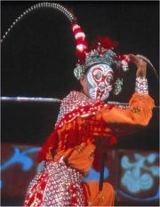
Opièí král (pekingská opera)
|
Vyprávìní o putování na západ
Autorem fantastického románu Vyprávìní o putování na západ (Si-jou-�i) byl Wu Ècheng-en (1500-1582), ale pøíbìh o pøenesení buddhismu z Indie do Èíny se tradoval dlouho pøedtím. Kniha má 1100 stran a obsahuje tøi èásti – první popisuje zrození Opièáka a jeho vzpouru proti nebi, druhá vypráví, jak tchangskı císaø navštívil podsvìtí a teprve tøetí zachycuje putování za posvátnımi buddhistickımi spisy.
Hlavní postavou je Opièák Sun Wu-kchung, kterı se zrodil z kamene. Nauèil se mnohım kouzlùm, získal nesmrtelnost, ale chtìl mnohem víc. Zaèal si øíkat Velkı svìtec rovnı nebi a porušoval jeden zákon za druhım. Ani Nefritovı císaø (nejvyšší bùh a panovník nebes) si s ním nevìdìl rady. Opièí král porazil nebeská vojska a hrozil znièením nebes. Zkrotí ho a� Nejvyšší Buddha, kterı Opièáka zavalí horou.
Opièího krále vysvobodil mnich Tripitaka, kterı byl vybrán, aby pøinesl posvátná písma ze Západního ráje. Bohové mu poskytli nìkolik ochráncù – Opièáka, Èuníka a Píseèného mnicha. Tito poutníci musejí pøekonat øadu nesnází, které zpùsobí buï sám Opièí král svou umínìností a drzostí, nebo jim je nastra�í zlí démoni. Lstivı Opièák ale v�dycky své druhy zachrání. Nakonec pøekonají i nejvìtší pøeká�ku Ohòovou horu a dorazí do Západního ráje, odkud si odnesou posvátná písma.
|
Èínskı buddhismus
Buddhismus zaèal do Èíny pronikat v 1. stol. n.l., ale pravı rozkvìt nastává a� v nejisté dobì mezi pádem dynastie Chan a nástupem dynastie Tchang, tj. ve 4. a� 7. stol. n.l. Tì�kou ránu zasadilo tomuto nábo�enství zavøení buddhistickıch klášterù, které naøídil císaø v roce 845.
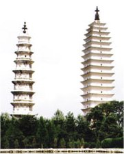
Indické buddhistické stúpy dostaly v Èínì zvláštní podobu. Tìmto stupòovitım stavbám øíkáme pagody. Také zobrazování Buddhy bylo znaènì odlišné.
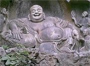
|
Kaligrafie
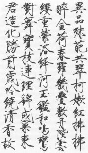
|
Jazyk a písmo
Ve starovìké Èínì se pro psanou literaturu pou�íval jazyk wen-jen. Èínština se od evropskıch jazykù v mnohém liší. Obsahuje pøedevším jednoslabièná slova, jejich� vıznam se mnohdy rozlišuje rùznou vıslovností stejné samohlásky (zále�í na tónu, jakım se „zazpívá"). Èínština nezná gramatické kategorie jako èíslo, rod, èas a nìkdy bıvá tì�ké rozlišit i slovní druhy. Tyto vlastnosti èínštiny ztì�ují práci pøedevším pøekladatelùm.
Nejstarší doklady èínského písma pocházejí z 2. tis. pø.n.l. a jde o nápisy na �elvích krunıøích. Za vlády dynastie Chan se ustálil slo�itı systém obrázkového písma, kde ka�dı znak odpovídá jinému slovu (slabice). Slova, která se stejnì vyslovují, se tedy píší jinak! Gramotnı èlovìk musí ovládat minimálnì 4000 znakù, existuje jich však mnohem více – 40 000. Píše se buï shora dolù, nebo zprava doleva, od roku 1956 také „evropsky" zleva doprava.
Èíòané jednotlivé znaky vlastnì malují. Pomocí štìtce nanášejí na papír èernou tu�. Od tohoto zpùsobu psaní je jenom kousek ke kaligrafii a tušové malbì. Není divu, �e se mnozí èínští spisovatelé zároveò vìnovali vıtvarnému umìní.
|
Systém písma
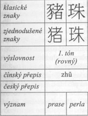
Rùzné èínské znaky s podobnou vıslovností a zcela odlišnımi vıznamy
|
Vıroba papíru
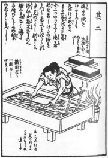
Vıroba papíru na japonské ilustraci
|
Vynález papíru a tisku
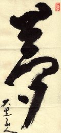
Papír vynalezl Cchaj Lun v roce 105 n.l. K jeho vırobì pou�íval staré rozdrcené látky, pøedevším hedvábí. Rostlinná vlákna se zaèala pou�ívat a� mnohem pozdìji. Èíòané si tento vynález støe�ili jako oko v hlavì, ale v 7. stol. zaèal pronikat do Japonska a v 8. stol. získali návod na vırobu papíru Arabové. Do Evropy se jejich prostøednictvím dostal a� v roce 1154, kdy byla postavena ve Španìlsku první papírna.
Také tisk je èínskım vynálezem. Buddhistiètí mniši chtìli rychleji šíøit své spisy, a proto je vyøezali do døevìnıch desek. První takto tištìná kniha pochází z roku 868 n.l. Od 10. století se zaèaly vyøezávat i jednotlivé znaky. V Èínì se dochoval kompletní buddhistickı kánon na kamennıch deskách.
Další díla a autoøi
Èchü Jüan (první èínskı básník)
Wang Wej (malíø a básník)
Jung-le ta-tien (encyklopedie z roku 1407)
|

Chang Šen: Uèitel a �ák
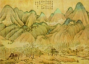
Èínská krajina
|
Internetové stránky
Èínská poezie, Mathesiovy pøevody
Tao te �ing
I-�ing, pøedpovídání budoucnosti podle Knihy promìn
Èínské umìní, struènı pøehled
Classic Chinese Paintings
Traditional Chinese Painting
Gallery of China
Malíøi dynastie Sung
Èínská malba
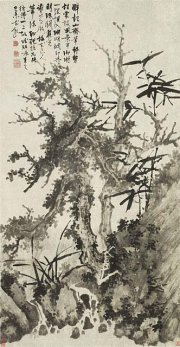
Bambus
|
Doporuèená èetba
Bondy, Egon: Èínská filosofie, Praha 1992
Cchao Süe-èchin: Sen v èerveném domì (3 svazky), Odeon 1986
Hartzová, Paula R.: Taoismus, pøel. S.Vomáèková, NLN, Praha 1996
Hoobler, Thomas a Dorothy: Konfucianismus, pøel. P.Jeøábková, NLN, Praha 1997
Hrdlièková, V.: Dìjiny èínské klasické literatury, Praha 1980
Chuej-neng: Tribunová sútra šestého patriarchy, pøel. O.Král, Odeon, Praha 1988
Chung Li: Èínská astrologie, pøel. A.Adámek, Volvox globator, Praha 1999
I-�ing, Kniha promìn, pøel. O.Král, Praha 1995
Konfucius: Rozpravy, pøel. Lesnı, Prùšek, Praha 1996
Lao-c´: Tao te �ing, pøel. O.Krebsová, DharmaGaia, Praha 1997
Li Po: Mìsíc nad prùsmykem, pøel. M.Ryšavá, Odeon, Praha 1977
Liu Xie: Duch básnictví øezanı do drakù, pøel. O.Král, Brody, Praha 2000
Mathesius, Bohumil: Zpìvy staré Èíny, SNKLHU, Praha 1957
Mistr Èuang: Vnitøní kapitoly, pøel. O.Král, Odeon, Praha 1992
Perlovı závìs, Poezie staré Èíny, pøel. F.Stoèes, Mladá fronta, Praha 1994
Podivuhodné pøíbìhy z èínskıch tr�iš� a bazarù, pøel. J.Prùšek, Odeon 1991
Po �ü-i: Datlovník v meruòkovém sadu, pøel. Kolmaš, Štroblová, Vyšehrad, Praha 1996
Prùšek, Jaroslav: O èínském písemnictví a vzdìlanosti, Dru�stevní práce, Praha 1947
Staro�itné zrcadlo, Pøíbìhy z doby Tchangù, Odeon, Praha 1977
Süan-cang: Zápisky o západních krajinách za Velkıch Tchangù, pøel. J.Kolmaš, Academia, Praha 2002
Tao, Texty staré Èíny, pøel. O.Král, Praha 1971 (2.vydání z roku 1994 má název Kniha mlèení)
Wu Ècheng-en: Opièí král, Vyprávìní o putování na západ, pøel. Z.Heømanová-Novotná, Albatros, Praha 1997
Wu Ting-c’: Literáti a mandaríni, Neoficiální kronika konfuciánù, pøel. O.Král, Votobia, Olomouc 1995
|
Pøiprav si referát o nìkteré z uvedenıch knih nebo internetovıch stránek.
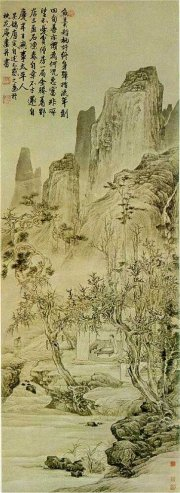
Tang Jin
|
|